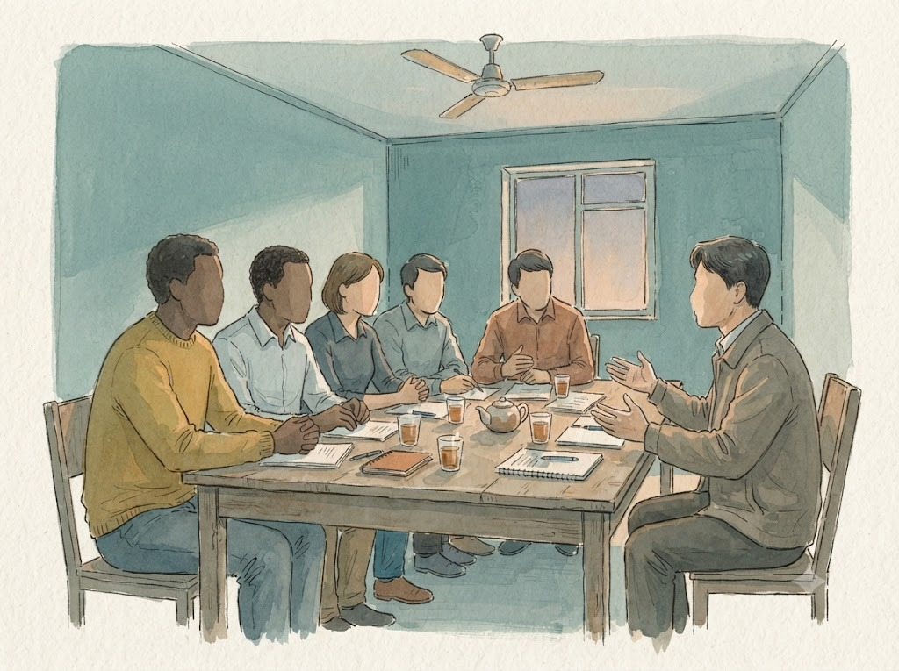
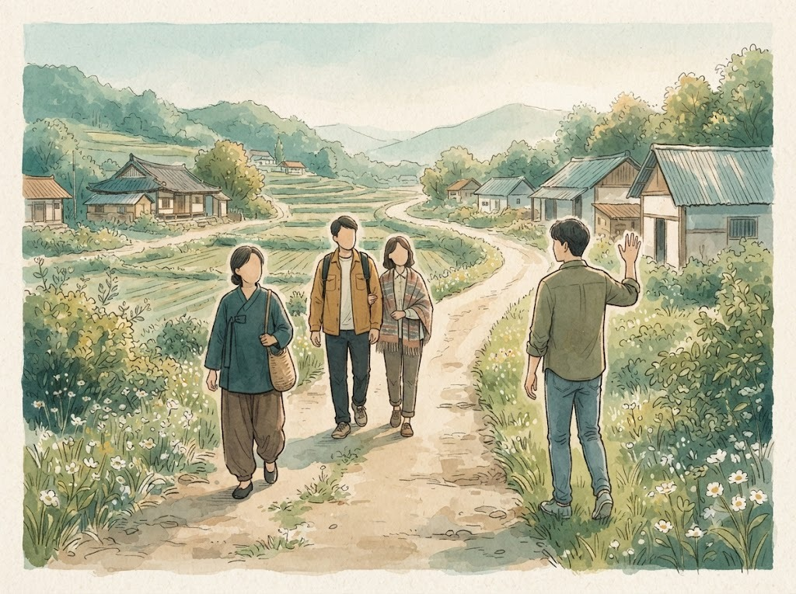
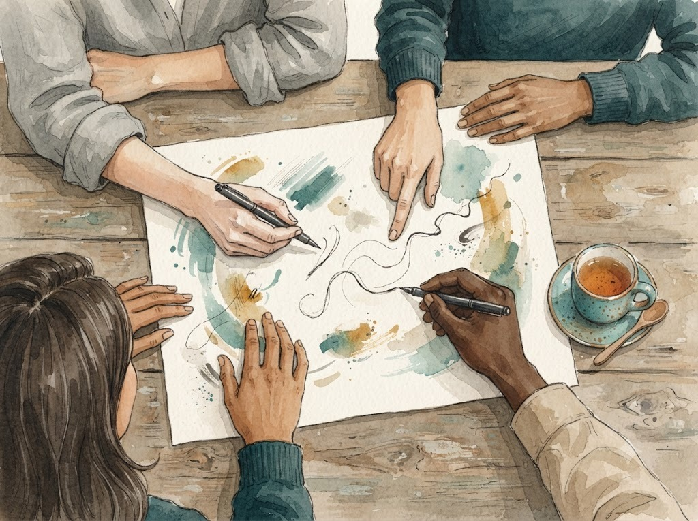

「감시」라는 걱정
가이드라인이 생긴 다음 해인 2025년 가을, 우리는 그것을 들고 처음으로 파트너 곁에 앉았습니다. 이름은 「프리컨설팅」이라고 붙였습니다. 일이 터진 뒤에 수습하는 컨설팅이 아니라, 무언가를 사거나 짓기 전에, 혹은 이미 지었더라도 문제가 생기기 전에 함께 설계해 보자는 뜻이었습니다. 처음 만나 형편을 살피고, 두 번째 만남에는 앞으로 이 일을 함께 짊어질 사람들을 모시고, 세 번째에는 문서로 남길 길을 함께 그리는 세 걸음을 생각했습니다. 첫해에는 두 파트너 가정이 손을 들어 주었습니다. 다 같이 한 번 모이고, 가정마다 한두 번씩 따로 만났습니다.
걱정과 기대가 한 사람 안에 나란히 있었던 것입니다.
이듬해 봄, 참가한 분들에게 솔직한 평가를 부탁드렸습니다. 현장 경험에서 나온 이야기라 도움이 되었다는 말이 고마웠습니다. 평가지의 첫 물음은 신청하기 전의 솔직한 마음이었는데, 우리는 거기에 감시나 간섭을 받는 건 아닐까 걱정이 되었다는 칸을 일부러 넣어 두었습니다. 그 걱정을 짐작하고 있었기 때문입니다. 두 분 가운데 한 분이 그 칸에 표시하셨습니다. 그리고 같은 물음에서, 사역의 돌파구나 방향을 찾고 싶었다는 칸에도 함께 표시하셨습니다. 걱정과 기대가 한 사람 안에 나란히 있었던 것입니다.
짐작하던 걱정도 표시된 칸으로 다시 보니 무게가 달랐습니다. 「재산권」이라는 말에는 이미 무게가 실려 있습니다. 거기에 「점검」이 붙으면, 아무리 좋은 뜻이어도 본부가 내 사역을 들여다보러 오는 자리로 들립니다. 우리가 1편에서 말한 울타리를, 받는 쪽에서는 담장으로 볼 수도 있었던 것입니다.
그래서 이름부터 바꿨습니다. 두 번째 해의 컨설팅은 「사역 거버넌스 동반 컨설팅」이라고 불렀습니다. 여기서 거버넌스란 현지의 재산과 사역에 관한 중요한 결정을 선교사 한 사람이 아니라 여럿이 함께 내리는 구조를 말합니다. 그리고 한 줄을 붙였습니다. 감시가 아니라 동반, 점검이 아니라 함께 짓는 자리.
우리가 실패한 자리
이름만 바꾼다고 될 일은 아니었습니다. 첫해를 돌아보며 위원회가 가장 오래 붙들었던 물음은 이것이었습니다. 컨설팅이 끝난 뒤 왜 다시 찾는 요청이 없었을까. 만족해서였을까, 부담스러워서였을까, 아니면 그만큼 절박하지 않아서였을까. 셋 다 가능성으로 놓고 물었습니다.
컨설팅이 끝나는 자리가 사실은 적용이 시작되는 자리였는데, 바로 그때 곁에 아무도 없었던 것입니다.
실마리는 평가 속에 있었습니다. 한 분이 스스로를 돌아보며, 함께 찾은 방안이 현장에 실제로 적용되도록 더 자주 만나고 더 많은 시간을 들였어야 했는데 그러지 못했다고 적었습니다. 저는 그 말이 그분의 반성이 아니라 우리의 반성이어야 한다고 생각했습니다. 우리는 통찰을 건넸고, 회의록을 남겼고, 그다음 손을 놓았습니다. 컨설팅이 끝나는 자리가 사실은 적용이 시작되는 자리였는데, 바로 그때 곁에 아무도 없었던 것입니다.
또 하나 배운 것이 있습니다. 파트너들이 들고 온 것은 「재산권」이라는 원칙의 질문이 아니었습니다. 당장 내려야 할 결정이었습니다. 땅과 건물과 사람과 돈에 관한, 머지않아 답을 내야 하는 결정들이었습니다. 우리는 원칙에서 출발했고 파트너들은 내일의 결정에서 출발했습니다. 그 사이에 틈이 있었습니다. 원칙은 버릴 수 없지만, 원칙만 들고 가서는 아무것도 바뀌지 않는다는 것을 그때 알았습니다.
그래도 일어난 일

그런데 그 첫해에 우리가 미처 기대하지 못한 일이 하나 일어났습니다. 한동안 모이기 어려웠던 한 현지 이사회가, 컨설팅을 계기로 다시 모인 것입니다. 미뤄 두었던 이야기를 그 자리에서 실제로 꺼내 놓았다고 했습니다.
우리가 들고 간 내용이 대단해서 그렇게 된 것이 아니었습니다. 밖에서 누군가가 한번 모여서 이야기해 보자고 불러 주었기 때문이었습니다. 재산을 함께 정하는 구조는 문서보다 모임이 먼저라는 것, 그리고 그 모임을 여는 데에는 때로 바깥의 목소리가 필요하다는 것을 그때 배웠습니다. 감시하는 눈이 아니라, 모이자고 불러 주는 목소리 말입니다.
다시 짠 방식

두 번째 해를 준비하며 위원회는 방식을 다시 짰습니다.
먼저 단계부터 보기로 했습니다. 컨설팅을 받는 분들의 형편은 다 다릅니다. 이제 막 모금을 시작한 분이 있고, 다 지어 놓고 운영하는 분이 있고, 넘겨줄 때가 다가온 분이 있습니다. 같은 가이드라인을 같은 순서로 펼쳐 놓는 것은 친절이 아니었습니다. 그래서 첫 만남은 진단이 아니라 「지금 어느 단계에 계신가」를 함께 확인하는 자리가 되었습니다.
우리의 성공은 위원회가 스스로를 불필요하게 만드는 데 있습니다.
다음으로 두 가지 역할을 나누었습니다. 하나는 코디입니다. 파트너가 가장 믿는 사람, 현지의 동역자일 수도 있고 파송교회의 선교위원일 수도 있는, 오래 곁에 남을 사람입니다. 다른 하나는 코워커입니다. 위원회의 위원들처럼 잠시 함께 걷는 바깥사람입니다. 코워커는 코디가 세워질 때까지만 곁에 있다가, 코디가 서면 물러납니다. 우리의 성공은 위원회가 스스로를 불필요하게 만드는 데 있습니다.
그리고 처음부터 다음 만남을 약속했습니다. 해가 바뀌면 다시 연락드리겠다는 약속입니다. 현지 법을 따져야 하는 일은 우리도 함께 공부하지만, 최종 판단은 그 나라의 전문가에게 맡겨야 한다는 것도 분명히 했습니다. 우리는 곁에서 함께 생각하는 자리에 서기로 했습니다.
함께 정하는 일은 한 장에서 시작한다

2026년의 컨설팅을 거치며 우리는 현지 재산에 관한 거버넌스, 곧 재산을 함께 정하는 구조의 첫걸음을 다시 생각하게 되었습니다. 새로운 운영 체계를 짜기 전에, 합의 문서 한 장을 쓰는 것으로도 시작할 수 있다는 것입니다.
그 한 장에는 이런 것이 들어갑니다. 이 재산이 어떻게 생겼는지, 지금 누가 어떻게 쓰고 있는지, 그리고 마지막에 어떻게 할지. 이어 갈 사람이 있으면 어떻게 넘기고, 이어 갈 사람이 없으면 어떻게 정리해 어디로 보낼지. 그 결정은 선교사 혼자 하지 않고 함께 동의한 사람들이 합의해서 한다는 것, 그리고 처음 드린 이들의 뜻을 먼저 헤아린다는 것까지. 선교사가 초안을 쓰고, 곁에서 함께하는 이들이 읽고 동의하고, 보낸 교회와 나누면 됩니다.
거창한 법인과 정관이 없어도 이 한 장으로 시작할 수 있습니다. 은퇴를 앞둔 어느 날 「이 건물은 누구 것이었지요?」라는 물음이 나왔을 때, 그 답이 한 사람의 기억이 아니라 여러 사람이 함께 동의한 종이 위에 있다면, 선교사는 혼자 오해를 받지 않아도 됩니다. 함께 정한 사람들이 대신 설명해 줄 수 있기 때문입니다.
감시는 의심에서 시작하지만, 동반은 신뢰에서 시작합니다.
감시는 의심에서 시작하지만, 동반은 신뢰에서 시작합니다. 우리는 의심하러 가는 사람이 아니라, 나중에 혼자 서 있지 않도록 지금 곁에 서는 사람이 되고 싶었습니다.
파트너 곁에 앉던 같은 무렵, 우리는 선교사를 보낸 교회 곁에도 앉았습니다. 다음 글은 그 이야기입니다.